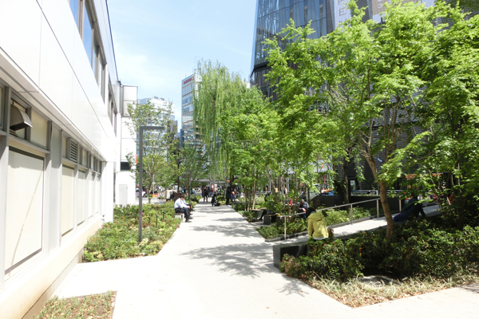
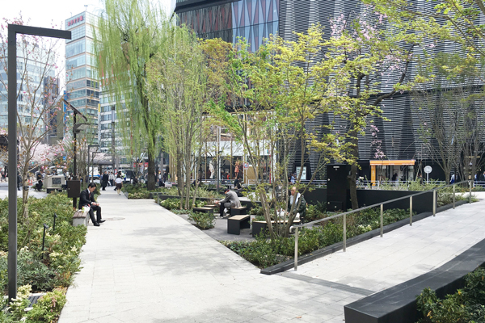
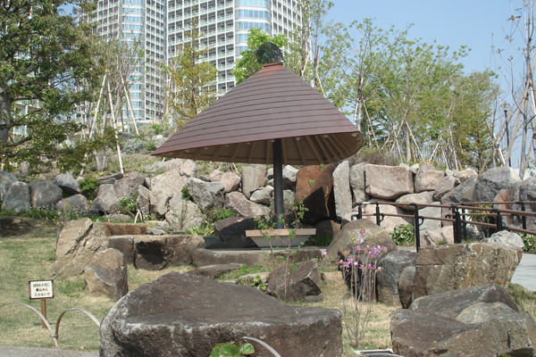
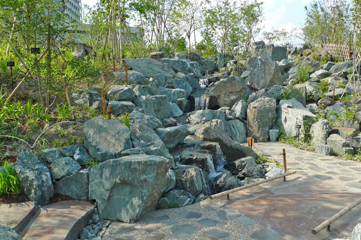
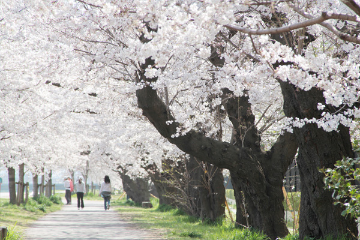

公共施設
Public Facilities
公共施設の実績紹介
地域と人と自然の融合を、緑化技術とみどりの維持管理技術で実現し、
地域のランドマークとなるみどりの空間を創造しています。
上用賀公園

竣工：2016年（植栽工事）
所在地：東京都世田谷区
事業主：世田谷区
担当業務：施工（造園工事）
数寄屋橋公園
- 
- 
竣工：2016年（改修工事）
所在地：東京都中央区
担当業務：実施設計、施工（改修工事）
二子玉川公園

竣工：2014年
所在地：東京都世田谷区
事業主：世田谷区
担当業務：施工（造園工事）
二子玉川公園 帰真園
都市公園等コンクール「特定テーマ部門」 国土交通省都市局長賞（2016年）
- 
- 
竣工：2013年
所在地：東京都世田谷区
事業主：世田谷区
担当業務：施工（造園工事）
【世田谷区の自然に回帰する】
世田谷の風土を活かした人間が自然環境に関わり、共生する世田谷・武蔵野の庭。
ユニバーサルデザインを基調とし、誰もが日本の空間文化を楽しめる新しいタイプの庭園である。
前橋市松並木

石神井公園ふるさと文化館
竣工：2010年
所在地：東京都練馬区
事業主：練馬区
担当業務：施工（壁面緑化工事・屋上緑化工事他）
【建築デザインと壁面緑化の共存】
建築に組み込まれたアースウォール工法による壁面緑化。
連続基盤の特徴を生かし、多様性のある自然な植栽を実現している。
武蔵野の森公園
下丸子高規格堤防サクラ
- 
竣工：2001年
所在地：東京都大田区
事業主：国土交通省
担当業務：施工（移植工事：TPM工法）